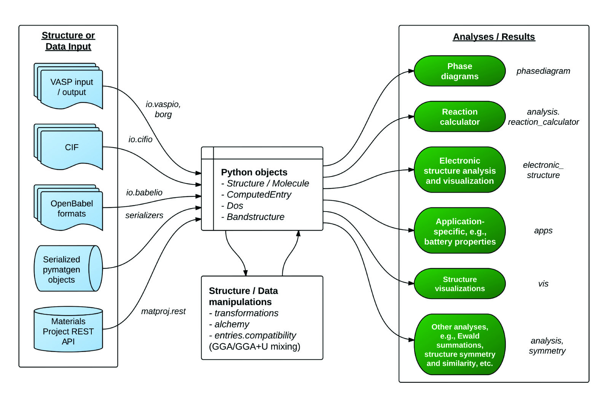

Pymatgen (Python Materials Genomics) is a robust, open-source Python library for materials analysis. These are some of the main features:
Highly flexible classes for the representation of Element, Site, Molecule, Structure objects.
Extensive input/output support, including support for VASP, ABINIT, CIF, Gaussian, XYZ, and many other file formats.
Powerful analysis tools, including generation of phase diagrams, Pourbaix diagrams, diffusion analyses, reactions, etc.
Electronic structure analyses, such as density of states and band structure.
Integration with the Materials Project REST API, Crystallography Open Database and other external data sources.
Important Resources¶
matgenb provides example Jupyter notebooks that demonstrate pymatgen functionality. Examples are shown below.
Dr Anubhav Jain (@computron) has created a series of tutorials and YouTube videos, which is a good resource, especially for beginners.
pymatgen MatSci forum or GitHub discussion: for questions that are not bug reports or feature requests.
Follow us on Twitter to get news and tips.
Bug reports or feature requests: Please submit an issue on Github Issues.
 Top: (left) Phase and (right) Pourbaix diagram from the
Materials API. Bottom left: Calculated bandstructure plot using
pymatgen’s parsing and plotting utilities. Bottom right: Arrhenius plot
using pymatgen’s DiffusionAnalyzer.
Top: (left) Phase and (right) Pourbaix diagram from the
Materials API. Bottom left: Calculated bandstructure plot using
pymatgen’s parsing and plotting utilities. Bottom right: Arrhenius plot
using pymatgen’s DiffusionAnalyzer.
Why use pymatgen?¶
It is (fairly) robust. Pymatgen is used by thousands of researchers and is the analysis code powering the Materials Project. The analysis it produces survives rigorous scrutiny every single day. Bugs tend to be found and corrected quickly. Pymatgen also uses Github Actions for continuous integration, which ensures that every new code passes a comprehensive suite of unit tests.
It is well documented. A fairly comprehensive documentation has been written to help you get to grips with it quickly.
It is open. You are free to use and contribute to pymatgen. It also means that pymatgen is continuously being improved. We will attribute any code you contribute to any publication you specify. Contributing to pymatgen means your research becomes more visible, which translates to greater impact.
It is fast. Many of the core numerical methods in pymatgen have been optimized by vectorizing in
numpy/scipy. This means that coordinate manipulations are fast. Pymatgen also comes with a complete system for handling periodic boundary conditions.It will be around. Pymatgen is not a pet research project. It is used in the well-established Materials Project. It is also actively being developed and maintained by the Materials Virtual Lab, the ABINIT group and many other research groups.
A growing ecosystem of developers and add-ons. Pymatgen has contributions from materials scientists all over the world. We also now have an architecture to support add-ons that expand pymatgen’s functionality even further. Check out the contributing page and add-ons page for details and examples.
The code is mightier than the pen.
As of 2024, pymatgen supports Python 3.10 and above. Our support schedule follows closely that of the Scientific Python software stack, i.e., when packages such as NumPy drops support for Python versions, we will drop support for newer versions. Similarly, support for new Python versions will be adopted only when most of the core dependencies support the new Python versions.
Getting pymatgen¶
Conda (recommended)¶
If you are absolutely new to Python and/or are using Windows, the easiest installation process is using conda. If you already have conda installed, pymatgen can be installed from the conda-forge channel using the following command:
conda install --channel conda-forge pymatgen
Note that you might need to ensure a relatively recent version of gcc is available to compile pymatgen. You can use conda to get that:
.. code:: shell
conda install gcc
Pymatgen is under active development, and new features are added regularly. To upgrade pymatgen to the latest version, use the following command:
conda upgrade pymatgen
Step-by-step instructions for all platforms are available at the installation page.
pip¶
The version at the Python Package Index (PyPI) is always the latest stable release that is relatively bug-free. The easiest way to install pymatgen on any system is to use pip:
pip install pymatgen
Wheels for Mac and Windows have been built for convenience. Similarly, you might need to ensure you have a relatively recent version of gcc.
To upgrade pymatgen via pip:
pip install --upgrade pymatgen
The bleeding edge developmental version is at the pymatgen Github repo. The developmental version is likely to be more buggy, but may contain new features. The Github version include complete test files. After cloning the source, you can type in the root of the repo:
pip install .
or to install the package in developmental mode:
pip install -e .
Detailed installation instructions, including installation of optional dependencies, set up for POTCAR generation, Materials Project REST interface usage, setup for developers, etc. are given on this page.
For some extras, you can also install the optional dependencies using:
pip install pymatgen[extra]
For an always up-to-date list of extras, consult the setup.py’s extras_require.
Usage¶
 Overview of a typical workflow for pymatgen.
The figure above provides an overview of the functionality in pymatgen. A typical workflow would involve a user converting data (structure, calculations, etc.) from various sources (first principles calculations, crystal and molecule input files, Materials Project, etc.) into Python objects using pymatgen’s io packages, which are then used to perform further structure manipulation or analyses.
Quick start¶
Here are some quick examples of the core capabilities and objects:
from pymatgen.core import Element, Composition, Lattice, Structure, Molecule
# Integrated symmetry analysis tools from spglib
from pymatgen.symmetry.analyzer import SpacegroupAnalyzer
si = Element("Si")
si.atomic_mass # 28.0855
print(si.melting_point)
# 1687.0 K
comp = Composition("Fe2O3")
comp.weight # 159.6882
# Note that Composition conveniently allows strings to be treated just like an Element object.
comp["Fe"] # 2.0
comp.get_atomic_fraction("Fe") # 0.4
lattice = Lattice.cubic(4.2)
structure = Structure(lattice, ["Cs", "Cl"], ...[[0, 0, 0], [0.5, 0.5, 0.5]])
# structure.volume
# 74.088000000000008
# structure[0]
# PeriodicSite: Cs (0.0000, 0.0000, 0.0000) [0.0000, 0.0000, 0.0000]
# You can create a Structure using spacegroup symmetry as well.
li2o = Structure.from_spacegroup(
"Fm-3m", Lattice.cubic(3), ["Li", "O"], [[0.25, 0.25, 0.25], [0, 0, 0]]
)
finder = SpacegroupAnalyzer(structure)
finder.get_space_group_symbol()
"Pm-3m"
# Convenient IO to various formats. You can specify various formats.
# Without a filename, a string is returned. Otherwise,
# the output is written to the file. If only the filename is provided,
# the format is intelligently determined from a file.
structure.to(fmt="poscar")
structure.to(filename="POSCAR")
structure.to(filename="CsCl.cif")
# Reading a structure is similarly easy.
structure = Structure.from_str(open("CsCl.cif").read(), fmt="cif")
structure = Structure.from_file("CsCl.cif")
# Reading and writing a molecule from a file. Supports XYZ and
# Gaussian input and output by default. Support for many other
# formats via the optional openbabel dependency (if installed).
methane = Molecule.from_file("methane.xyz")
methane.to("methane.gjf")
# Pythonic API for editing Structures and Molecules (v2.9.1 onwards)
# Changing the specie of a site.
structure[1] = "F"
print(structure)
# Structure Summary (Cs1 F1)
# Reduced Formula: CsF
# abc : 4.200000 4.200000 4.200000
# angles: 90.000000 90.000000 90.000000
# Sites (2)
# 1 Cs 0.000000 0.000000 0.000000
# 2 F 0.500000 0.500000 0.500000
# Changes species and coordinates (fractional assumed for structures)
structure[1] = "Cl", [0.51, 0.51, 0.51]
print(structure)
# Structure Summary (Cs1 Cl1)
# Reduced Formula: CsCl
# abc : 4.200000 4.200000 4.200000
# angles: 90.000000 90.000000 90.000000
# Sites (2)
# 1 Cs 0.000000 0.000000 0.000000
# 2 Cl 0.510000 0.510000 0.510000
# Replaces all Cs in the structure with K
structure["Cs"] = "K"
print(structure)
# Structure Summary (K1 Cl1)
# Reduced Formula: KCl
# abc : 4.200000 4.200000 4.200000
# angles: 90.000000 90.000000 90.000000
# Sites (2)
# 1 K 0.000000 0.000000 0.000000
# 2 Cl 0.510000 0.510000 0.510000
# Replaces all K in the structure with K: 0.5, Na: 0.5, i.e.,
# a disordered structure is created.
structure["K"] = "K0.5Na0.5"
print(structure)
# Full Formula (K0.5 Na0.5 Cl1)
# Reduced Formula: K0.5Na0.5Cl1
# abc : 4.209000 4.209000 4.209000
# angles: 90.000000 90.000000 90.000000
# Sites (2)
# # SP a b c
# --- ----------------- --- --- ---
# 0 K:0.500, Na:0.500 0 0 0
# 1 Cl 0.5 0.5 0.5
# Because structure is like a list, it supports most list-like methods
# such as sort, reverse, etc.
structure.reverse()
print(structure)
# Structure Summary (Cs1 Cl1)
# Reduced Formula: CsCl
# abc : 4.200000 4.200000 4.200000
# angles: 90.000000 90.000000 90.000000
# Sites (2)
# 1 Cl 0.510000 0.510000 0.510000
# 2 Cs 0.000000 0.000000 0.000000
# Molecules function similarly, but with Site and Cartesian coords.
# The following changes the C in CH4 to an N and displaces it by 0.01A
# in the x-direction.
methane[0] = "N", [0.01, 0, 0]
The above illustrates only the most basic capabilities of pymatgen. Users are strongly encouraged to explore the usage pages.
API documentation¶
For detailed documentation of all modules and classes, please refer to the API docs.
More resources¶
The founder and maintainer of pymatgen, Shyue Ping Ong, has conducted several workshops (together with Anubhav Jain) on how to effectively use pymatgen (as well as the extremely useful custodian error management and FireWorks workflow software. The slides for these workshops are available on the Materials Virtual Lab.
pmg command line interface¶
To demonstrate the capabilities of pymatgen and to make it easy for users to quickly use the functionality, pymatgen comes with a set of useful scripts that utilize the library to perform all kinds of analyses. These are installed to your path by default when you install pymatgen through the typical installation routes.
Here, we will discuss the most versatile of these scripts, known as pmg. The typical usage of pmg is:
pmg {setup, config, analyze, plotdos, plotchgint, convert, symm, view, compare} additional_arguments
At any time, you can use pmg --help or pmg subcommand --help to
bring up a useful help message on how to use these subcommands. Here are
a few examples of typical usages:
# Parses all vasp runs in a directory and display the basic energy
# information. Saves the data in a file called vasp_data.gz for subsequent
# reuse.
pmg analyze .
# Plot the dos from the vasprun.xml file.
pmg plot --dos vasprun.xml
# Convert between file formats. The script attempts to intelligently
# determine the file type. Input file types supported include CIF,
# vasprun.xml, POSCAR, CSSR. You can force the script to assume certain file
# types by specifying additional arguments. See pmg convert -h.
pmg structure --convert --filenames input_filename output_filename.
# Obtain spacegroup information using a tolerance of 0.1 angstroms.
pmg structure --symmetry 0.1 --filenames filename1 filename2
# Visualize a structure. Requires VTK to be installed.
pmg view filename
# Compare two structures for similarity
pmg structure --group element --filenames filename1 filename2
# Generate a POTCAR with symbols Li_sv O and the PBE functional
pmg potcar --symbols Li_sv O --functional PBE
Add-ons¶
Some add-ons are available for pymatgen today:
The pymatgen-db add-on provides tools to create databases of calculated run data using pymatgen.
The custodian package provides a JIT job management and error correction for calculations and is used by the Materials Project for high-throughput calculations.
pymatgen-analysis-diffusion by the Materials Virtual Lab provides modules for diffusion analysis, including path determination for NEB calculations, analysis of MD trajectories (RDF, van Hove, Arrhenius plots, etc.)
A comprehensive listing is provided at the addons page.
Contributing¶
Pymatgen is developed by a team of volunteers. It is started by a team comprising of MIT and Lawrence Berkeley National Laboratory staff to be a robust toolkit for materials researchers to perform advanced manipulations of structures and analyses.
For pymatgen to continue to grow in functionality and robustness, we rely on other volunteers to develop new analyses and report and fix bugs. We welcome anyone to use our code as-is, but if you could take a few moment to give back to pymatgen in some small way, it would be greatly appreciated. A benefit of contributing is that your code will now be used by other researchers who use pymatgen, and we will include an acknowledgement to you (and any related publications) in pymatgen.
Reporting bugs¶
A simple way that anyone can contribute is simply to report bugs and issues to the developing team. Please report any bugs and issues at pymatgen’s Github Issues. For help with any pymatgen issue, consult Stack Overflow and if you cannot find an answer, please post a question on the pymatgen MatSci forum.
Developing new functionality¶
Another way to contribute is to submit new code/bugfixes to pymatgen. The best way for anyone to develop pymatgen is by adopting the collaborative Github workflow (see contributing page.
Citing pymatgen¶
If you use pymatgen in your research, please consider citing the following work:
Shyue Ping Ong, William Davidson Richards, Anubhav Jain, Geoffroy Hautier,
Michael Kocher, Shreyas Cholia, Dan Gunter, Vincent Chevrier, Kristin A.
Persson, Gerbrand Ceder. *Python Materials Genomics (pymatgen) : A Robust,
Open-Source Python Library for Materials Analysis.* Computational Materials
Science, 2013, 68, 314–319. https://doi.org/10.1016/j.commatsci.2012.10.028
In addition, some of pymatgen’s functionality is based on scientific advances / principles developed by various scientists. Please refer to the references page for citation info.
Soliciting contributions to an updated pymatgen paper¶
If you are a long-standing pymatgen contributor and would like to be
involved in working on an updated pymatgen publication, please
contact the maintainers @shyuep, @mkhorton and
@janosh.
License¶
Pymatgen is released under the MIT License.
Team¶
Shyue Ping Ong of the Materials Virtual Lab started Pymatgen in 2011, and is still the project lead.
The Pymatgen Development Team is the set of all contributors to the pymatgen project, including all subprojects.
The full list of contributors are listed in the team page.
Copyright Policy¶
Pymatgen uses a shared copyright model. Each contributor maintains copyright over their contributions to pymatgen. But, it is important to note that these contributions are typically only changes to the repositories. Thus, the pymatgen source code, in its entirety is not the copyright of any single person or institution. Instead, it is the collective copyright of the entire pymatgen Development Team. If individual contributors want to maintain a record of what changes/contributions they have specific copyright on, they should indicate their copyright in the commit message of the change, when they commit the change to one of the pymatgen repositories.